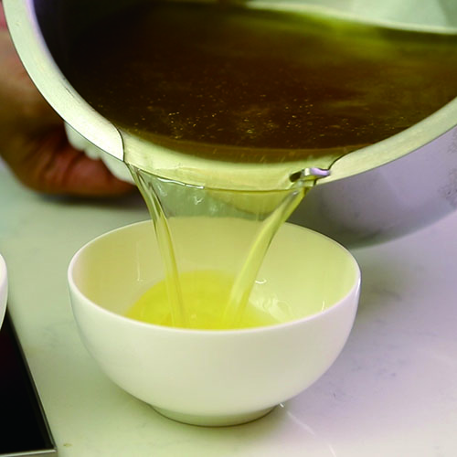
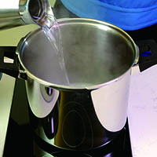
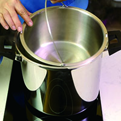
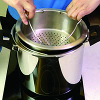
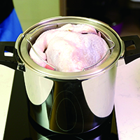
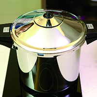
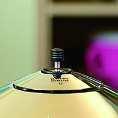
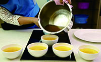
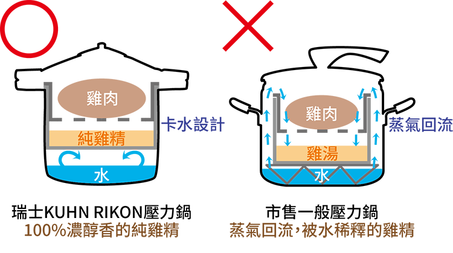
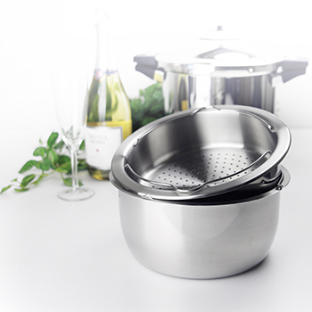

自己煉雞精 一定要知道的7件事（常春月刊專題報導）
你還在外面買雞精嗎？
為家人端上一碗自己親手煉的雞精，不但最有誠意
而且比你想像的更省錢、更簡單、更安心喔！
Q1：雞精對人體的好處？
藥膳養生專家林秋香老師表示：「喝雞精最大的好處就是可以快速恢復體力，而且營養很容易被人體吸收。想幫自己補補身體時，可早晚喝100cc雞精。」
雞精內含豐富胺基酸，可促進身體的新陳代謝，進而讓精神變好，早晨空腹喝一碗更為有效。特別適合飲用雞精的族群包括：
l 手術/化療後的虛弱病患（需有醫囑）
l 要保持最佳狀態的考生
l 用腦過度的上班族
l 需調養身體的孕婦
（藥膳養生專家林秋香認為，自己煉雞精經濟實惠又安心。）
Q2：為什麼要自己煉雞精？
安心：食材的新鮮度看得到，可確保絕無添加防腐劑與香料
新鮮：現煮現喝最新鮮，濃醇香的100%純雞精，口感大勝罐裝雞精
省錢：市售60cc包裝的品牌雞精，一包約140元，有的甚至高達180元。自己煉雞精，60cc的成本大約是36元，可省下100多元。如果每天喝一包，一個月可省下將近4,000元。
Q3：雞精怎麼煉?
以KUHN RIKON瑞士壓力鍋8L+專屬的煉雞精配件為例
1. 8L壓力鍋內放1000cc的水
2.放入沒洞的深內鍋
3.放入有洞的淺內鍋
4.放入4台斤的雞
5.上蓋後開中火
6.壓力閥上升至兩條線（如圖）後，轉米粒火，計時60分鐘，然後關火等待洩壓
7.100%現煉純雞精，量超多
Q4.要用什麼樣的鍋子？
最好的選擇是有專屬煉雞精配件的頂級壓力鍋。
電鍋：往往要重複蒸上兩三次，才能將雞的精華萃取出，費時費力。煉雞精配件沒有卡水設計，水氣會回流，只能煉出加水的雞精（雞湯）。
一般壓力鍋：煉雞精配件沒有卡水設計，水氣會回流，只能煉出加水的雞精（雞湯）。
KUHN RIKON瑞士壓力鍋：有專屬的煉雞精配件，可隔絕底部水氣，快速煉出100%濃醇香的雞精，將食材營養完全萃取出來。
 Q5要選什麼樣的雞？
1. 公雞，因為比較不油，可以煉出比較多雞精
2. 現流新鮮全雞
3. 先清洗乾淨，再敲碎骨頭，才能取得骨髓精華！（敲後不要再洗雞，不要切的花花的，或剁塊）
4. 將雞頭與脖子剁掉，但雞身不要切的花花的或剁塊，若放不進鍋內，可連雞腳都剁掉
| 鍋具大小 | 雞的大小 |
|---|---|
| 8L壓力鍋 | 4台斤的公雞 |
| 5L壓力鍋 | 2.5台斤的公雞 |
Q6.要花多久時間？
壓力鍋上壓後，調成超小火所需的續煮時間
| 30～40分鐘 | 雞精量較少，雞肉可直接食用 |
|---|---|
| 50～60分鐘 | 雞精量多，雞肉稍柴 |
| 90分鐘 | 雞精量非常多，雞肉很柴 |
Q7. 一隻雞可以煉出多少雞精？
4台斤的全雞售價約600元，可煉出約1000cc的雞精。若分裝小玻璃罐，放冰箱冷藏，可存放7～10天。單獨喝建議去油，可用油篩撈掉上層的油，或是置涼後放冷藏，再將最上層油脂挖掉。
只要有好的工具，每個人都可以在家輕鬆煉出100%濃醇香的純雞精，隨時幫心愛的家人補補身體喔^^。